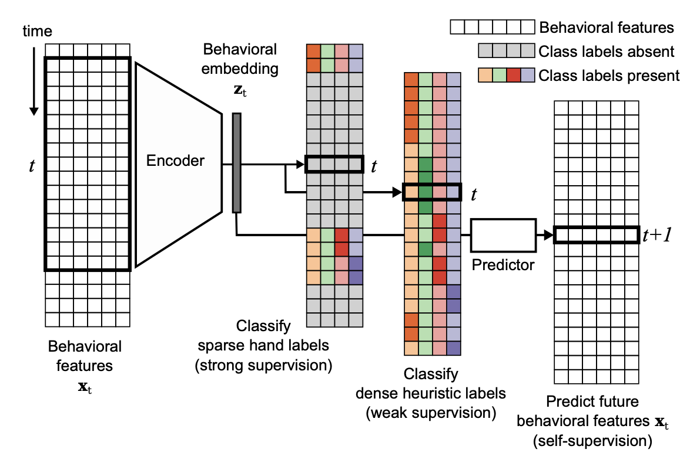
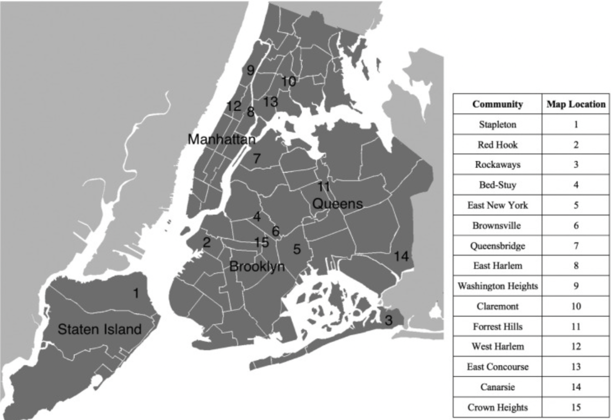

|
Catherine Yu-Chi Chen I'm Catherine, a second year PhD in the Institute for Computational and Mathematical Engineering (ICME) at Stanford. I received my undergraduate degree in Data Science - a joint major between Computer Science and Statistics, at Columbia University in 2022. This is my website, feel free to browse around :) |

|
ResearchMy research interest lie in studying situations in which machine learning algorithms fail, including problems such as, uncertainty quantification, anomaly detection, distribution shifts, and out-of-distribution detection. |
|  |
Semi-supervised sequence modeling for improved behavioral segmentation
bioRXiv, 2021 Advised by Prof. Liam Paninski and Matthew Whitway @ the Zuckerman Institute bioRXiv / code We introduce a semi-supervised sequence model for behavioural segmentation that takes advantage of weak- and self-supervision. This approach displays superior performance when including a large number of unlabeled frames in the regime of sparse hand labels, and including a small number of hand labeled frames in an unsupervised setting. |
|||||
|  |
Community implications for gun violence prevention during co-occurring pandemics
PubMed, 2022 Advised by Prof. Shih-Fu Chang and Prof. Chris Thomas @ the DVMMLab PubMed We develop a natural language processing (NLP) and computer vision (CV) data science system that leverages Twitter data with multimodal machine learning to automatically identify tweets related to expression of loss and aggression. |
My Research Notes |

|
Distribution-free, Risk-controlling Prediction Sets
S. Bates, A. Angelopoulos, L. Lei, J. Malik, and M. Jordan, “Distribution-free, Risk-controlling Prediction Sets,” J. ACM, vol. 68, no. 6, pp. 1–34, Dec. 2021, doi: 10.1145/3478535. On-going notes on Distribution-Free, Risk-controlling Prediction Sets, a method for generating set-valued predictions from a black-box predictor that controls the expected loss on future test points at a user-specified level. |
|||||
|
|
Conformal Prediction
A. N. Angelopoulos and S. Bates, “A Gentle Introduction to Conformal Prediction and Distribution-Free Uncertainty Quantification.” arXiv, Dec. 07, 2022. Accessed: Dec. 14, 2023. [Online]. Available: http://arxiv.org/abs/2107.07511 On-going notes on Conformal Prediction. |
Teaching |

|
CME 102: Ordinary Differential Equations
Fall 2023 Analytical and numerical methods for solving ordinary differential equations arising in engineering applications. |
|||||

|
MATH 1102: Calculus II
Fall 2021 Methods of integration, applications of the integral, Taylors theorem, infinite series. |
Fun |
|